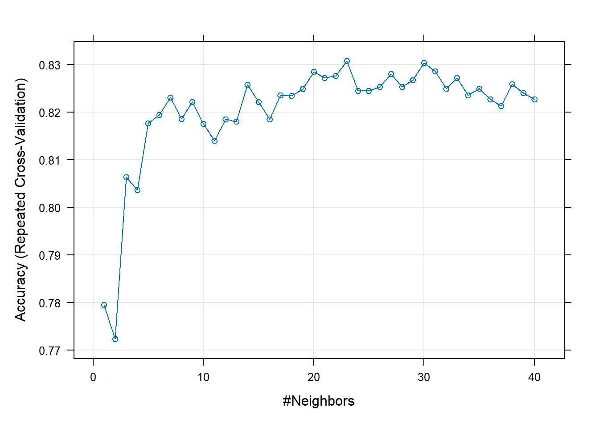
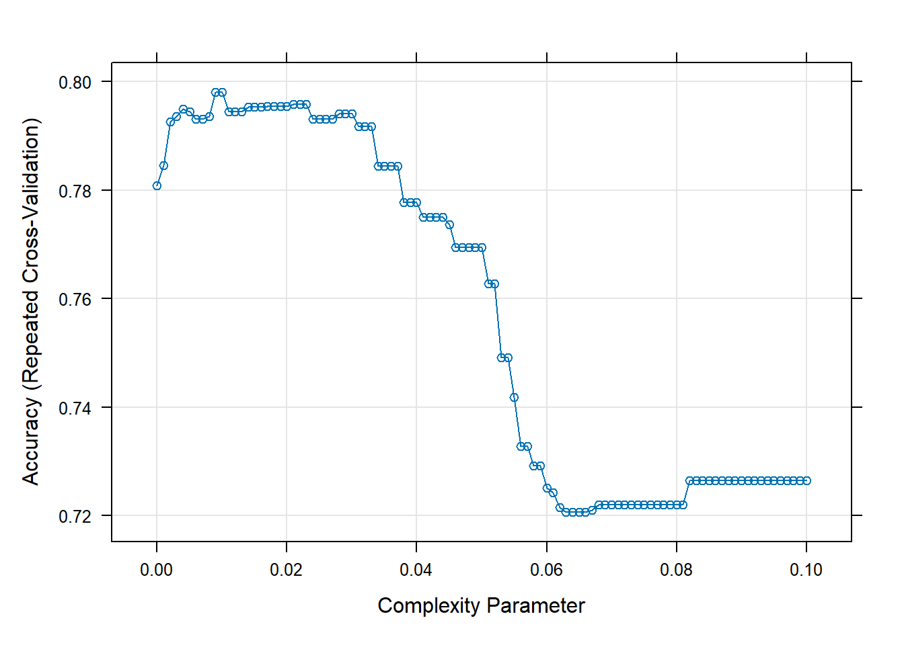

This homework shows practice fitting models and using the caret package. First, conceptual questions are discussed. Then, we will be performing some EDA on a heart disease data set. Once ready, we will be fitting several different types of models: kNN, Logistic Regression, Tree Models. We will be using repeated CV and displaying confusion matrices of the accuracy of the models on the test data.
Author
Samuel O’Ferrell
Task 1: Conceptual Questions
What is the purpose of using cross-validation when fitting a random forest model?
With random forest models, there are a lot of changes we can make to the model, using cross validation can help determine better shrinkage, n.trees, and interaction.depth. Also, if we have time, we can fit many models to compare with cross validation. This informs us if we should use a simpler/easier to implement model of the performance drop isn’t large.
Describe the bagged tree algorithm.
The bagged tree algorithm for is as follows:
Create a bootstrap sample (same size as actual sample)
Train tree on this sample (no pruning necessary)
Repeat B = 1000 times
(Regression) Final prediction is average of these prediction
(Classification) Final prediction can be majority vote (most common prediction made by all bootstrap trees)
What is meant by a general linear model?
A general linear model is a model that is for continuous responses, but allows for both continuous and categorical predictors.
When fitting a multiple linear regression model, what does adding an interaction term do? That is, what does it allow the model to do differently as compared to when it is not included in the model?
Adding an interaction term helps capture any dependent relationship/effect between predictors. In a model without the interaction term, all predictors are assumed to have an independnt effect on the response.
Why do we split our data into a training and test set?
We split our data into a training set to train the model and then with the test set of the data we can see how accurate the model is at predicting the correct variable. By doing this we are ensuring no data leakage and creating a solid unbiased model.
Task 2: Fitting Models
These are the libraries accessed for the assignment.
library(tidyverse)
Warning: package 'tidyverse' was built under R version 4.3.3
Warning: package 'ggplot2' was built under R version 4.3.3
Warning: package 'readr' was built under R version 4.3.3
Warning: package 'lubridate' was built under R version 4.3.3
── Attaching core tidyverse packages ──────────────────────── tidyverse 2.0.0 ──
✔ dplyr 1.1.4 ✔ readr 2.1.5
✔ forcats 1.0.0 ✔ stringr 1.5.1
✔ ggplot2 3.5.1 ✔ tibble 3.2.1
✔ lubridate 1.9.3 ✔ tidyr 1.3.0
✔ purrr 1.0.2
── Conflicts ────────────────────────────────────────── tidyverse_conflicts() ──
✖ dplyr::filter() masks stats::filter()
✖ dplyr::lag() masks stats::lag()
ℹ Use the conflicted package (<http://conflicted.r-lib.org/>) to force all conflicts to become errors
library(caret)
Warning: package 'caret' was built under R version 4.3.3
Loading required package: lattice
Attaching package: 'caret'
The following object is masked from 'package:purrr':
lift
Now, we will be reading in the data. I have saved it into the folder for my repo.
heart <-read_csv("heart.csv")
Rows: 918 Columns: 12
── Column specification ────────────────────────────────────────────────────────
Delimiter: ","
chr (5): Sex, ChestPainType, RestingECG, ExerciseAngina, ST_Slope
dbl (7): Age, RestingBP, Cholesterol, FastingBS, MaxHR, Oldpeak, HeartDisease
ℹ Use `spec()` to retrieve the full column specification for this data.
ℹ Specify the column types or set `show_col_types = FALSE` to quiet this message.
Now we will quickly understand your data. We will check on missingness and summarize the data, especially with respect to the relationships of the variables to HeartDisease
heartNA <- heart |>filter(if_any(everything(), is.na))# no missing data# Generating tables of the variablestable(heart$ChestPainType, heart$HeartDisease)
0 1
ASY 104 392
ATA 149 24
NAP 131 72
TA 26 20
table(heart$Sex, heart$HeartDisease)
0 1
F 143 50
M 267 458
table(heart$RestingECG, heart$HeartDisease)
0 1
LVH 82 106
Normal 267 285
ST 61 117
Now we will create a new variable that is a factor version of the HeartDisease variable. We will also remove the ST_Slope variable and the original HeartDisease variable.
heart_new <- heart |>mutate(HeartDiseaseF =as.factor(HeartDisease)) |>#changing to factorselect(-c(ST_Slope,HeartDisease)) # removing ST_slope and original HeartDisease variable
Now we will create dummy columns corresponding to the values of these variables (Sex, ExerciseAngina, ChestPainType, and RestingECG) for use in our kNN fit.
# generating a dummy variable modelmodel <-dummyVars(~ Sex + ExerciseAngina + ChestPainType + RestingECG, data = heart_new)# applying it on the dataheart_dummy <-as.data.frame(predict(model, newdata = heart_new))# combining with our original dataheart_new_dummy <-cbind(heart_new, heart_dummy)
Now we will split our data into a training and test set.
set.seed(3)# Creating an 80/20 splitsplit <-createDataPartition(y = heart_new_dummy$HeartDiseaseF, p =0.8, list =FALSE)train <- heart_new_dummy[split, ]test <- heart_new_dummy[-split, ]dim(train)
[1] 735 22
kNN
Next, we’ll fit a kNN model. We will use repeated 10 fold cross-validation, with the number of repeats being 3. We will also preprocess the data by centering and scaling.
Model
# removing non-numeric variables for easier modelingtrain_numeric <- train |>select(-c(Sex, ChestPainType, RestingECG, ExerciseAngina))# centering and scalingpreProcValues <-preProcess(train_numeric, method =c("center", "scale"))trainTransformed <-predict(preProcValues, train_numeric)# knn modelfit1 <-train(HeartDiseaseF ~ ., data = trainTransformed,method ="knn",trControl =trainControl(method ="repeatedcv", number =10,repeats =3, ),tuneGrid =expand.grid(k =seq(from =1, to =40, by =1)))
Plot
plot(fit1)

Analysis
Now, we will dislay our confusion matrix to see how well the model performed.
# pre-procesing my test data prior to running the model:test_numeric <- test |>select(-c(Sex, ChestPainType, RestingECG, ExerciseAngina))preProcValues <-preProcess(test_numeric, method =c("center", "scale"))testTransformed <-predict(preProcValues, test_numeric)# confusion matrixconfusionMatrix(data = testTransformed$HeartDiseaseF, reference =predict(fit1, newdata = testTransformed))
Confusion Matrix and Statistics
Reference
Prediction 0 1
0 64 18
1 21 80
Accuracy : 0.7869
95% CI : (0.7204, 0.8438)
No Information Rate : 0.5355
P-Value [Acc > NIR] : 1.39e-12
Kappa : 0.5706
Mcnemar's Test P-Value : 0.7488
Sensitivity : 0.7529
Specificity : 0.8163
Pos Pred Value : 0.7805
Neg Pred Value : 0.7921
Prevalence : 0.4645
Detection Rate : 0.3497
Detection Prevalence : 0.4481
Balanced Accuracy : 0.7846
'Positive' Class : 0
Logistic Regression
Using our EDA, we will posit three different logistic regression models.
# three modelsmodel1 <- HeartDiseaseF ~ Age + Sex + Cholesterolmodel2 <- HeartDiseaseF ~ RestingBP + FastingBS + MaxHRmodel3 <- HeartDiseaseF ~ ChestPainType*RestingECG
glmFit1 <-train(model1, data = train,method ="glm",family ="binomial",trControl =trainControl(method ="repeatedcv", number =10,repeats =3))glmFit2 <-train(model2, data = train,method ="glm",family ="binomial",trControl =trainControl(method ="repeatedcv", number =10,repeats =3))glmFit3 <-train(model3, data = train,method ="glm",family ="binomial",trControl =trainControl(method ="repeatedcv", number =10,repeats =3))
Analysis
cat("Model 1 Accuracy: ")
Model 1 Accuracy:
glmFit1$results$Accuracy
[1] 0.6902174
cat("Model 2 Accuracy: ")
Model 2 Accuracy:
glmFit2$results$Accuracy
[1] 0.7056759
cat("Model 3 Accuracy: ")
Model 3 Accuracy:
glmFit3$results$Accuracy
[1] 0.7573831
As we can see our 3rd model was the most accurate. Let’s look at a basic summary of it:
summary(glmFit3)
Call:
NULL
Coefficients:
Estimate Std. Error z value Pr(>|z|)
(Intercept) 1.4008932 0.2707697 5.174 2.29e-07 ***
ChestPainTypeATA -2.0070290 0.5752321 -3.489 0.000485 ***
ChestPainTypeNAP -2.5358731 0.4691923 -5.405 6.49e-08 ***
ChestPainTypeTA -2.0940403 0.6109960 -3.427 0.000610 ***
RestingECGNormal -0.0977492 0.3168172 -0.309 0.757675
RestingECGST 0.0009054 0.3888455 0.002 0.998142
`ChestPainTypeATA:RestingECGNormal` -1.6097498 0.6928163 -2.323 0.020153 *
`ChestPainTypeNAP:RestingECGNormal` 0.5105944 0.5393475 0.947 0.343797
`ChestPainTypeTA:RestingECGNormal` 0.7908963 0.7748374 1.021 0.307385
`ChestPainTypeATA:RestingECGST` -0.3755988 0.7987133 -0.470 0.638173
`ChestPainTypeNAP:RestingECGST` 1.7759284 0.6713103 2.645 0.008158 **
`ChestPainTypeTA:RestingECGST` 0.6922418 1.2046579 0.575 0.565536
---
Signif. codes: 0 '***' 0.001 '**' 0.01 '*' 0.05 '.' 0.1 ' ' 1
(Dispersion parameter for binomial family taken to be 1)
Null deviance: 1010.42 on 734 degrees of freedom
Residual deviance: 764.86 on 723 degrees of freedom
AIC: 788.86
Number of Fisher Scoring iterations: 4
Now we will predict with the test data and model 3 and see how we do:
Confusion Matrix and Statistics
Reference
Prediction 0 1
0 55 27
1 15 86
Accuracy : 0.7705
95% CI : (0.7027, 0.8293)
No Information Rate : 0.6175
P-Value [Acc > NIR] : 7.564e-06
Kappa : 0.5295
Mcnemar's Test P-Value : 0.08963
Sensitivity : 0.7857
Specificity : 0.7611
Pos Pred Value : 0.6707
Neg Pred Value : 0.8515
Prevalence : 0.3825
Detection Rate : 0.3005
Detection Prevalence : 0.4481
Balanced Accuracy : 0.7734
'Positive' Class : 0
Tree Models
In this section we’ll fit a few different tree based models in a similar way as above! We will be using repeated 10 fold CV to select a best model for Tree method comparison.
This is the model we will be using:
model <- HeartDiseaseF ~ Sex + Age + ExerciseAngina + Oldpeak + ChestPainType
Classification Tree Model
We will start with a classification tree model:
treeFit <-train(model, data = train,method ="rpart",trControl =trainControl(method ="repeatedcv", number =10,repeats =3),tuneGrid =expand.grid(cp =seq(from =0, to =0.1, by =0.001)) )
Plot
This is a plot of our model:
plot(treeFit)

Random Forest
Now we will create a Random Forest model:
rfFit <-train(model, data = train,method ="rf",trControl =trainControl(method ="repeatedcv", number =10,repeats =3),tuneGrid =expand.grid(mtry =seq(from =1, to =length(model1), by =1)) )
Boosted Tree
Now we will generate a Boosted Tree model:
boostedFit <-train(model, data = train,method ="gbm",trControl =trainControl(method ="repeatedcv", number =10,repeats =3),tuneGrid =expand.grid(n.trees =c(25,50,100,200),interaction.depth =c(1,2,3),shrinkage =0.1,n.minobsinnode =10 ),verbose =FALSE)
Comparison of the Three Models
We will generate the confusion matrix of all three models in order, and access the accuracy of each model:
As we can see, we nearly got 80% accuracy with our Boosted Model, giving it the highest accuracy of all the models we went through. This model overall did the best job on the test set.